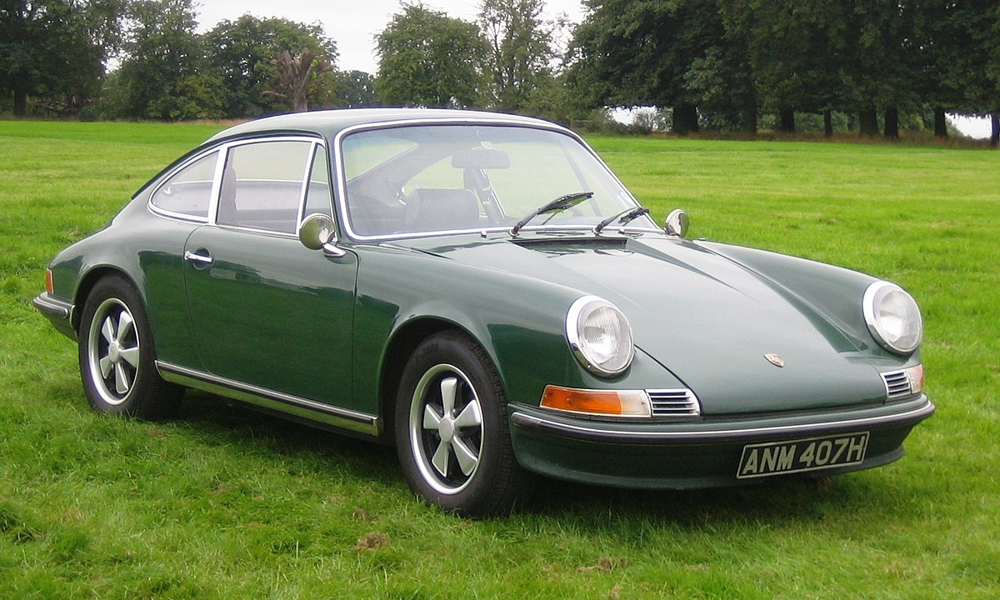

|  |
| The Porsche 911 Classic is one of the most iconic sports cars ever built, representing a perfect blend of engineering precision and timeless design. Introduced in 1964, the original 911 was a successor to the Porsche 356 and quickly established itself as a symbol of performance, reliability, and style. Its distinctive silhouette—with the sloping roofline, round headlights, and rear-engine layout—became an instantly recognizable feature that has evolved gracefully through decades without losing its original character. |
| What truly set the classic 911 apart was its air-cooled flat-six engine, mounted at the rear, giving it unique handling characteristics that demanded skill but rewarded confident drivers. The car’s lightweight construction and balanced chassis made it a joy to drive on both winding roads and racetracks. Porsche engineers continuously refined the design throughout the 1960s and 1970s, enhancing power, suspension, and aerodynamics while maintaining the pure driving experience that enthusiasts adored. |
| Beyond its engineering excellence, the Porsche 911 Classic became a cultural icon, loved by car enthusiasts, collectors, and racers alike. It symbolized a driver’s car—elegant yet raw, sophisticated yet simple in purpose. Today, restored and well-preserved 911s from the classic era are among the most sought-after collector cars in the world, appreciated not just for their performance but also for their enduring legacy in automotive history. |